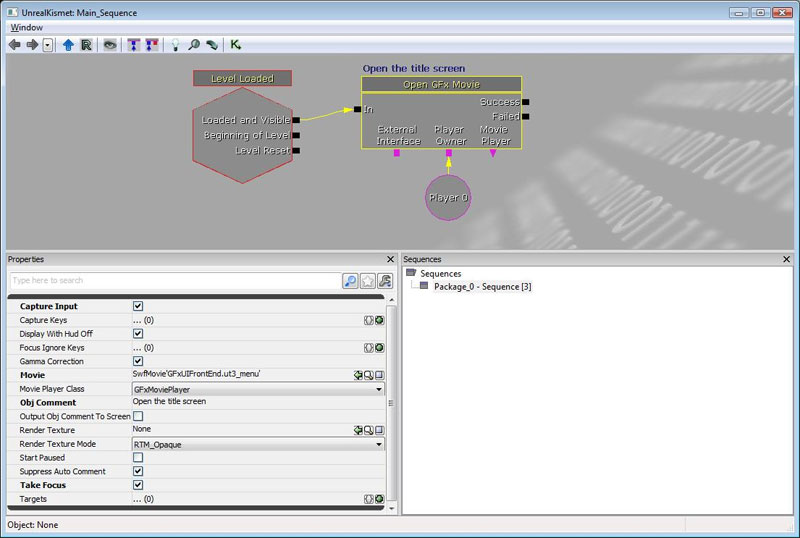
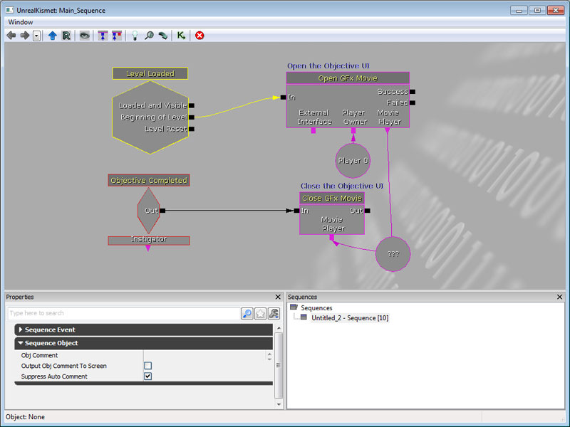
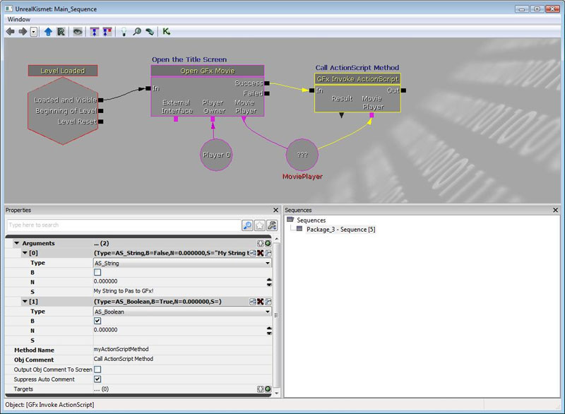
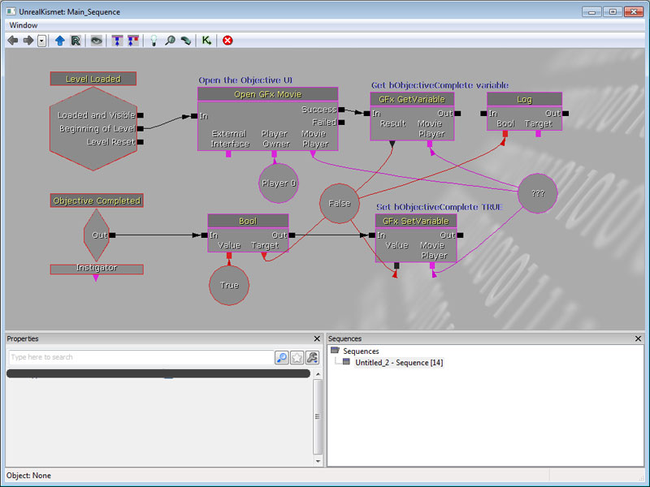

UDN
Search public documentation:
ScaleformContentGuideCH
English Translation
日本語訳
한국어
Interested in the Unreal Engine?
Visit the Unreal Technology site.
Looking for jobs and company info?
Check out the Epic games site.
Questions about support via UDN?
Contact the UDN Staff
日本語訳
한국어
Interested in the Unreal Engine?
Visit the Unreal Technology site.
Looking for jobs and company info?
Check out the Epic games site.
Questions about support via UDN?
Contact the UDN Staff
Scaleform 内容指南
概述
在虚幻3引擎中的Scaleform GFx整合使在Adobe Flash专业版中建立的界面及菜单能用作平头显示(HUDs)和菜单。 本文为使用Scaleform GFx系统的美工人员和设计人员提供了针对内容和设计方面的指南。 它所涵盖的内容有，如何使用Scaleform和Flash新建界面，以及在虚幻3引擎中如何在关卡中使用这两个界面。
使用CLIK组件
在您的库中添加新的CLIK对象
要将新的CLIK对象添加到您的库，您有两种选择： 把一个对象从预设的文件中复制出来，或把GFx类应用到一个movieclip(视频短片)。复制并粘帖 方法
- 在Adobe Flash Professional CS4中，打开CLIK_Components.fla，这个文件在\UnrealEngine3\Development\Flash\CLIK\components。
- 选中库中的一个对象，复制并粘帖到您的文件中。
- 打开Component Inspector(组件查看器) (Shift+F7)查看您所引入到图层中的CLIK对象相关的属性和值。
将CLIK类应用到一个现有的视频短片
您也可以将任何CLIK类应用到某个视频短片。 如果您添加自定义功能，或只需要一个没有状态变化的简易按钮，这个功能将很有用。- 右击库中的视频短片并选择属性
- 通过复选框启用"Export for ActionScript(为动作脚本导出)"。
- 在 “class(类)” 域中，输入您要使用的类。 (比如 gfx.controls.Button)
- 点击确定
- 再次右击对象，但是打开"Component Definition(组件定义)..."。
- 在"class(类)"域中，输入应用到属性中相同的类： gfx.controls.Button
- 点击确定
复制CLIK对象-一张检查清单
在您的库中复制组件不会保留它们的类和组件类信息，也不会有一些同链接标识相关的自动命名的问题发生。 这里是一个快捷检查清单，它能保证CLIK对象在复制或最初安装以后正确设置。- CLIK类需要在它的属性中定义，并选中Export for Action导出。 当您用Adobe Flash进行复制时，这些属性不会从您正在复制的最初的库对象中复制过来。
- 组件定义也需要设置。在备份阶段这些信息不会从最初的文件中复制过来。
- 确保它的标识符的名称和对象名称一样。
内容最佳性能
场景构建
 也请注意上图标记为红色的Bag Clip部分，它非常简单，但却非常必要。 问题是，如果您通过程序方式模糊了一些东西，您就破坏了时间轴，这意味着动画会突然插播进来，或动画播放可能会在不可预见的状态。 所以要添加一个新的层(我们称作 "bagging"))来保证只有模糊一个从来没有在时间轴上直接播放动画的短片。 该层次以上和以下的短片可以制作动画，但实际正在进行模糊处理的层次短片本身不能进行动画。
这是一个非常重要的要点，如果您通过代码在时间轴上进行动画的短片上更改模糊、alpha或是位置变量，那它的表现将不再可以预见。 这是我们在开发过程中的深刻教训，所以请不要这么操作。 若还有任何疑问，请参阅 bag
也请注意上图标记为红色的Bag Clip部分，它非常简单，但却非常必要。 问题是，如果您通过程序方式模糊了一些东西，您就破坏了时间轴，这意味着动画会突然插播进来，或动画播放可能会在不可预见的状态。 所以要添加一个新的层(我们称作 "bagging"))来保证只有模糊一个从来没有在时间轴上直接播放动画的短片。 该层次以上和以下的短片可以制作动画，但实际正在进行模糊处理的层次短片本身不能进行动画。
这是一个非常重要的要点，如果您通过代码在时间轴上进行动画的短片上更改模糊、alpha或是位置变量，那它的表现将不再可以预见。 这是我们在开发过程中的深刻教训，所以请不要这么操作。 若还有任何疑问，请参阅 bag
Kismet和Scaleform结合使用
在Kismet中打开视频
要从kismet中打开一个视频，只要新建一个 Open GFx Movie 动作(New Action(新动作) > GFx UI(GFx界面) > Open GFx Movie(打开GFx视频)) 并把SWF应用到 Movie(短片) 的属性，将这个应拥有该视频的视频播放器类赋予 Movie Player Class(视频播放类) 属性 ，如下所示
这个用来打开视频的播放器应同 Player Owner 变量链接连接。 属性- CaptureInput(捕捉输入)
- 如果视频被选中，该视频会默认捕捉 CaptureKeys array(数组) 中所列出的关键帧。
- CaptureKeys(捕捉关键帧)
- 如果选中 CaptureInput ,在该列表中的关键帧将会发送到GFX视频。
- DisplayWithHUDOff(HUD关闭时显示)
- 即使HUD没有显示(对大多数非HUD界面视频用户来说是有用的)，该视频也会显示。
- Movie(视频)
- 您所要播放的对视频 (作为资源导入到引擎中的SWF文件)的引用
- MoviePlayerClass(MoviePlayer类)
- (Advanced(高级选项)) 如果有一个封装了您想使用的视频的功能UnrealScript 类，那么从列表中选择该项 否则，则使用默认选项 GFxMoviePlayer 。
- RenderTexture(渲染贴图)
- (Advanced(高级选项)) I 如果您不想渲染该视频到全屏，而是想将它渲染到贴图上，以便它能在游戏中可以使用，请把它指定到这里。 如果没有指定任何内容，视频将会渲染到屏幕上。
- StartPaused(开始暂停)
- 如果选中该项，视频将不会默认进行播放，而是会由脚本控制手动播放。
- TakeFocus(启用聚焦)
- 如果选中该项，GFX视频会在打开时控制屏幕的聚焦。
在Kismet中关闭视频
要通过Kismet来关闭视频，您可以使用 Close GFx Movie(关闭GFX视频) 动作，不过首先您需要在 Object 变量中保存一个到您想关闭的视频的引用。 当打开一个新的视频时，该引用可以在 Open GFx Movie(打开GFX视频) 动作中的 Movie Player 变量中获得。
属性- Unload(卸载)
- 如果选中该选项，视频将在它关闭时从储存器中卸载。
在Kismet中调用ActionScript 函数
可以在Kismet中调用一个打开的SWF视频的ActionScript(动作脚本)方法。 比如，假设在一个打开的视频中有以下ActionScript 函数：
function myActionScriptMethod(MyString:String, MyBool:Boolean)
{
// Do something interesting!
}

要想传递参数给方法，您必须向您想调用的ActionScript函数的每个参数的参数数组中添加一项 每项有4个可编辑文本域。- Type(种类)
- 这指定了您想传入到那个插槽中的参数的类型。 相关的类型有 AS_String (S)、AS_Boolean (B)和AS_Number (N)。
- S
- 您想传输的字符串数据。
- B
- 您想传输的布尔数据。
- N
- 您想传输的数字数据。
在Kismet中从GFx 接收ActionScript调用
ActionScript可以使用FSCommands 来在Kismet中触发事件。 它的工作方式和Kismet中的其它事件一样： 比如：
fscommand("myFSCommand");

获得和设置值
可以通过使用 GFx GetVariable 和 GFx SetVariable 来访问或设置属于通过Kismet打开的Scaleform视频中的对象的变量的值。
属性- Variable(变量)
- 要获得其值或为其设置值的变量名称。
Scaleform中的字体
!"#$%&'()*+,-./0123456789:;<=>?@ABCDEFGHIJKLMNOPQRSTUVWXYZ[\]^_`abcdefghijklmnopqrstuvwxyz{|}~
€„ˆ›Œ‘’“”–—˜™›œ¡¢£¨©ª«®°²³´¹º»¿ÀÁÂÃÄÅÆÇÈÉÊËÌÍÎÏÑÒÓÔÕÖØÙÚÛÜßàáâãäåæçèéêëìíîïñòóôõöøùúûüýÝ¥§Ÿ…
A;a;C'c'C(c(D(d(E;e;E(e(L'l'??N'n'N(n(O"o"R(r(S's'ŠšT(t(U*u*U"u"Z'z'Z.z.Žž
??????????????????????????????????????????????????????????????????
!"#$%&'()*+,-./0123456789:;<=>?@ABCDEFGHIJKLMNOPQRSTUVWXYZ[\]^_`abcdefghijklmnopqrstuvwxyz{|}~ €„ˆ›Œ‘’“”–—˜™›œ¡¢£¨©ª«®°²³´¹º»¿ÀÁÂÃÄÅÆÇÈÉÊËÌÍÎÏÑÒÓÔÕÖØÙÚÛÜßàáâãäåæçèéêëìíîïñòóôõöøùúûüýÝ¥§Ÿ…A;a;C'c'C(c(D(d(E;e;E(e(L'l'??N'n'N(n(O"o"R(r(S's'ŠšT(t(U*u*U"u"Z'z'Z.z.Žž???????????????????????????????????????????????????????????????????A-a-A(a(??E-e-E(e(E.e.G(g(G,g,I-i-I;i;I.?K,k,L,l,L(l(N,n,O-o-O(o(ŒœR'r'R,r,S's'S,s,T,t,U-u-U*u*U;u; S,s,T,t,
°
ª
- UFonts(U字体): Urneal bitmap fonts(虚幻位图字体)-渲染很快！ 支持远程区域 (仅单色，放大效果很好，但不能保持明显尖锐的角落）。 RBGA位图 (没有和缩放一样好，全色)
- 嵌入vector字体(onts_en.swf, fonts_*.swf) 有时候渲染速度很快。 动态字体缓存能造成性能上的问题；不能高效更新。 不支持RGBA
- 系统字体-和嵌入字体相似，但要从OS中进行查找. 对要求完全本地化支持的电脑游戏来说很不错。
Localization/GFxUI.int 文件遵循以下规则之一将字体的标记名称和实际字体进行映射。
- U字体 - U字体资源的路径；比如GearFonts.MyFont
- Vector字体 - 从fonts_en.swf导出的vector字体名称；比如Arial, Bold
- 系统字体 - 稍后完成
[Fonts] NormalFont=Bitstream Vera Sans BoldFont=Bitstream Vera Sans,Bold SmallFont=Bitstream Vera Sans TitleFont=Bitstream Vera Sans,Bold
常见字体错误
> Missing font "$NormalFont" in "_level0.PauseMenuSP.PartyPanelLoaderPanel.PartyPanel.PPListItem1.PlayerIcon.textField". Search log: > Searching for font: "$NormalFont" > Movie resource: "$NormalFont" not found. > Imports : "$NormalFont" not found. > : "../UI_Common/gfxfontlib.swf", "..\UI_Common\UI_Common_Assets.swf". > Exported : "$NormalFont" not found. > Searching GFxFontProvider: "$NormalFont" not found. > Font not found. > Error: Resource for font id = 12 is not found in text field id = 52, def text = 'OPTION' > Error: Resource for font id = 12 is not found in text field id = 52, def text = 'OPTION' > Error: Resource for font id = 12 is not found in text field id = 59, def text = 'textField'
- UI_Common/fonts_en.fla - 用作语言的字体和字形。
- UI_Common/gfxfontlib.fla - SWF库，它定义字体标识($NormalFont, $LargeFont, 等)
- UI_Common/UI_Common_Assets.fla - 我们共享的基础控件的通用资源
- UI_FrontEnd/UI_CommonFrontEndAssets.fla - 我们共享的前端资源。
$NormalFont 标识和错误中提示您遗漏的其他东西。
测试和调试页面
在调试时启用或禁用 GFx渲染
在从旧的界面系统到新的GFx UI系统变换的过程中，如果在构建新UI的过程中有人正在使用旧版UI，那么禁用GFx UI 可能是有用的。 因为这个情况，我们为调试添加了一个简单的布尔值，它允许您禁止GFx UI进行渲染及获取输入。 要想改变该值，只要在您游戏的Engine.ini文件中修改一下布尔值即可：[Engine.GameViewportClient] bDebugNoGFxUI=false
用于测试的引擎exec(可执行)函数
在此添加了几个调试函数，它们能让美术工作者在引擎中查看SWF视频时更加简便。 除非额外指出，否则会这些函数仅在当前GFx渲染的最上面的视频上进行操作。- GFxGotoAndPlay Path FrameLabel -从指定的视频剪辑跳到指定的帧标签处，并开始播放。
- GFXGOTOANDSTOP Path FrameLabel - 从指定的视频剪辑跳到指定的帧标签处，并停止播放。
- GFXINVOKE Path FunctionName - 在指定路径上调用具有 FunctionName 的Actionscript(动作脚本)函数。
- GFXRESTARTMOVIE - 重新开始播放最顶部渲染中的视频。